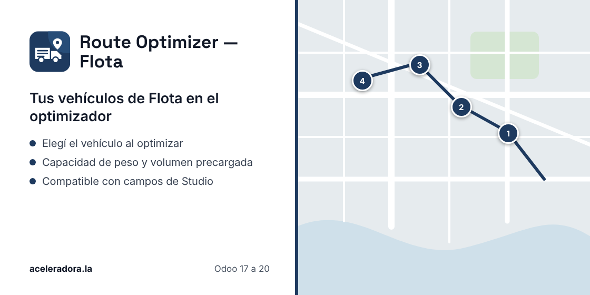

<section style="max-width: 900px; margin: 0 auto; font-family: -apple-system, 'Segoe UI', Roboto, Arial, sans-serif; color: #111827;">
    
    <div style="padding: 32px 0 8px; text-align: center;">
        <h1 style="margin: 0; font-size: 34px; color: #111827;">Tus vehículos de Flota en el optimizador</h1>
        <p style="margin: 10px auto 0; max-width: 640px; font-size: 18px; line-height: 1.5; color: #4b5563;">Elegí el vehículo al optimizar y su capacidad se completa sola.</p>
    </div>
    <div style="display: flex; flex-wrap: wrap; gap: 14px; margin-top: 24px;">
        <div style="flex: 1 1 250px; padding: 18px; border: 1px solid #e5e7eb; border-top: 4px solid #1E3A5F; border-radius: 10px; background: #ffffff;">
            <div style="font-size: 17px; font-weight: 700; color: #111827;">Vehículo en el asistente</div>
            <div style="margin-top: 6px; font-size: 15px; line-height: 1.5; color: #4b5563;">Campo de vehículo de Flota al optimizar la ruta.</div>
        </div>
        <div style="flex: 1 1 250px; padding: 18px; border: 1px solid #e5e7eb; border-top: 4px solid #1E3A5F; border-radius: 10px; background: #ffffff;">
            <div style="font-size: 17px; font-weight: 700; color: #111827;">Capacidad precargada</div>
            <div style="margin-top: 6px; font-size: 15px; line-height: 1.5; color: #4b5563;">Peso y volumen desde el vehículo o la categoría de su modelo.</div>
        </div>
        <div style="flex: 1 1 250px; padding: 18px; border: 1px solid #e5e7eb; border-top: 4px solid #1E3A5F; border-radius: 10px; background: #ffffff;">
            <div style="font-size: 17px; font-weight: 700; color: #111827;">Campos propios</div>
            <div style="margin-top: 6px; font-size: 15px; line-height: 1.5; color: #4b5563;">Reconoce campos personalizados y de Studio.</div>
        </div>
    </div>
    <h2 style="margin: 40px 0 12px; font-size: 24px; text-align: center; color: #111827;">Qué necesitás</h2>
    <ol style="max-width: 640px; margin: 0 auto; font-size: 16px; line-height: 1.8; color: #374151;">
        <li>Los módulos <strong>Route Optimizer</strong> y <strong>Flota</strong>.</li>
    </ol>

    <div style="margin-top: 40px; padding: 24px; border-radius: 12px; background: #111827; color: #ffffff; text-align: center;">
        <div style="font-size: 20px; font-weight: 700;">aceleradora.la</div>
        <div style="margin-top: 6px; font-size: 15px; color: #d1d5db;">Implementación y desarrollo Odoo para empresas de Latinoamérica</div>
        <div style="margin-top: 14px; font-size: 15px;">
            <a href="https://aceleradora.la" style="color: #ffffff; font-weight: 700;">aceleradora.la</a>
            &nbsp;·&nbsp; <a href="mailto:info@aceleradora.la" style="color: #ffffff;">info@aceleradora.la</a>
            &nbsp;·&nbsp; <a href="https://github.com/aceleradora-la/odoo-route-optimizer" style="color: #ffffff;">Código en GitHub</a>
        </div>
        <div style="margin-top: 10px; font-size: 13px; color: #d1d5db;">Licencia LGPL-3 · Community y Enterprise</div>
    </div>
</section>
